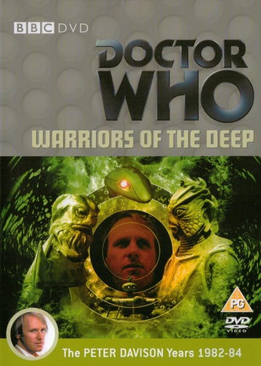
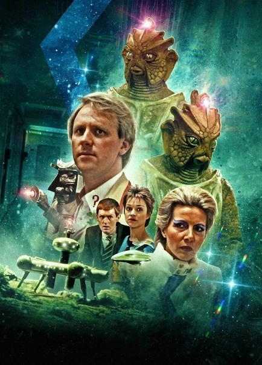

Эра Пятого Доктора (21 сезон)
<<< НАЗАД ||| 1. Воины глубин ||| ДАЛЬШЕ >>>
DVO [PARUSSKI], MVO [RedDiamond studio] или Original [ENG] Субтитры: Русские и Английские |  |
|---|---|
с обновленными спецэффектами DVO [PARUSSKI], MVO [RedDiamond studio] или Original [ENG] Субтитры: только Английские | |
с фанатским обновлением визуальных эффектов (cunningmunki) DVO [PARUSSKI] или Original [ENG] Субтитры: Русские и Английские | |
Warriors of the Deep
Дата выхода: 5-13 января 1984
Формат: 4 эпизода по 25 мин.
 |  |
Земля, 2084 год. Две сверхдержавы на грани ядерной войны. ТАРДИС вынужденно материализуется на подводной военной базе с ракетами на борту. Экипаж принимает Доктора, Тиган и Турлоу за вражеских агентов, а на базе тем временем зреет заговор — кто-то саботирует системы и убивает операторов. Но главная угроза приходит снаружи: силурианцы и морские дьяволы, древние рептилии, просыпаются и планируют спровоцировать войну, которая уничтожит человечество.
Силурианцы и морские дьяволы впервые появились вместе — и это их последний выход в классическом сериале. Сцена, где доктор Солоу пытается остановить гигантскую Мирку приёмом карате и тут же погибает от электрического разряда, стала легендарным провалом — руководители BBC потом приводили её как пример, почему сериал надо закрыть. А во время съёмок этой серии Питер Дэвисон и Джанет Филдинг объявили о своём уходе.
VHS - сентябрь 1995 |  DVD+Boxset - 14 января 2008 |  Blu-ray - 16 марта 2026 * Версия в нашей группе |
|---|




Трейлер: